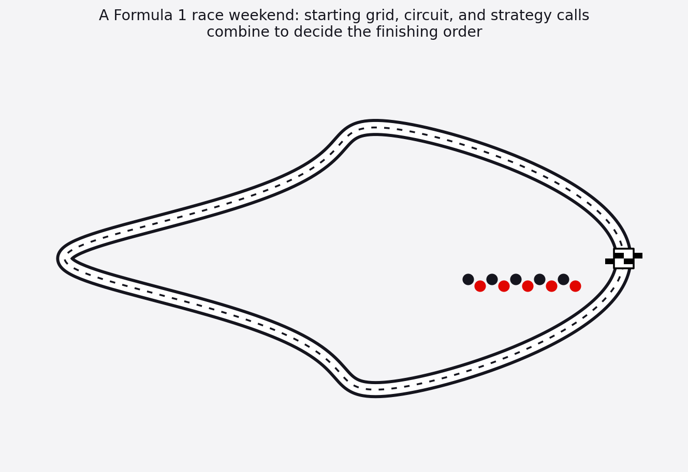

Introduction

Formula 1 is the top level of single-seater racing. Twenty drivers from ten teams compete across roughly twenty-three races a year, spread over five continents. Each team, called a constructor, builds its own car from scratch. That makes every season an engineering contest as much as a driving one. Teams spend months in wind tunnels and simulators before a car ever turns a wheel in competition. A race weekend blends driver skill with strategy calls, mechanical reliability, and the weather. None of these factors decide a result on their own. That is why no single explanation ever fully accounts for who wins and who loses. The sport started in 1950 and has grown into a global event. Hundreds of millions of people now watch on television and streaming platforms. Millions more attend races in person, from Melbourne to Las Vegas. Recent years have brought a wave of new attention. Behind the scenes coverage introduced casual viewers to the sport's personalities and rivalries. Formula 1 also carries real economic weight. It supports host cities, tourism, sponsorship deals, and a long chain of engineering and manufacturing jobs. Fans, bettors, and fantasy competition players all care about the same basic question. What actually decides who finishes where? Teams and drivers already lean on historical data to plan their strategy. Much of that same data is now public. Anyone can dig into it and draw their own conclusions. People argue constantly about which factor matters most in a race. Qualifying speed gets credit some weeks. Tyre management or pit crew execution gets credit in others. These arguments rarely settle cleanly. Too many of these factors move together during a race for any one of them to stand alone. Understanding how they interact matters beyond the racetrack too. The same skills, working under pressure with limited information while weighing risk, show up in plenty of other competitive settings.
Formula 1 results affect far more people than just the drivers. Engineers, team owners, sponsors, broadcasters, host cities, and millions of fans all have a stake in how a season plays out. Teams and their strategists feel this most directly. A single pit stop call or tyre choice can turn a podium finish into a disappointing one, and that has real financial consequences tied to prize money and sponsorship value. Drivers are shaped by consistent performance too. Their market value, contract talks, and reputation all depend on how well they and their team turn raw pace into results on race day. Host circuits and cities benefit economically when races are close and exciting. A season seen as dull or predictable can hurt ticket sales and broadcast interest the following year. Fans are affected in a more personal way. They invest real emotional energy into rivalries and championship battles that hinge on these same performance factors. Journalists and broadcasters have long tried to explain race outcomes to the public. Most of that explanation has relied on expert commentary and storytelling rather than a systematic look at the underlying data. That is starting to change. Motorsport organizations and data providers have released increasingly detailed historical records in recent years. Lap times, pit stop timing, tyre compound choices, and weather conditions are now far more available than they used to be. Academic and hobbyist analysts have already picked apart pieces of this puzzle. Some have studied the historical value of pole position. Others have looked at which pit stop timing windows tend to work best, or how much of a driver's success comes from the car rather than the person behind the wheel. Much of that work looks at one factor at a time. Grid position gets studied on its own more often than it gets studied alongside tyre strategy, pit execution, constructor strength, and weather, even though all of these move together during a real race. There is still room to bring these threads together using real historical records that span multiple seasons. This project sits inside that gap. It uses publicly available Formula 1 data to look at race and strategy factors together, with the goal of building a clearer, evidence-based picture of what actually separates a strong result from a weak one.
Research Questions
- How strongly does starting grid position predict final race finishing position across different circuits and seasons?
- Do certain constructors consistently convert strong qualifying positions into strong race results more effectively than others?
- How does the number of pit stops a driver makes during a race relate to their final finishing position?
- Are there identifiable patterns in the timing of pit stops, such as early versus late strategy calls, that relate to better outcomes?
- How do tyre compound choices and the length of tyre stints relate to a driver's pace and final result?
- Do wetter or hotter race conditions change which factors matter most in determining race outcomes?
- Is there a meaningful difference in how much grid position matters at high-speed circuits compared to tighter, more technical circuits?
- How consistent is the relationship between constructor strength and driver finishing position across multiple seasons?
- Do drivers who lose positions at the start of a race tend to recover them by the finish, or does an early setback tend to compound over the course of a race?
- Which combination of factors, such as grid position, pit stop count, and constructor, appears to explain the largest share of variation in final race outcomes?
The 2026 Formula 1 Calendar
The dataset explored in this project covers the 2021 through 2023 seasons, but Formula 1 is an ongoing sport with a new calendar every year. The table below lists the confirmed 2026 season, for reference and context. The Bahrain Grand Prix keeps its name in 2026 but moves to the Sepang International Circuit in Malaysia.
| Round | Grand Prix | Circuit | Country |
|---|
Data Preparation & Exploratory Data Analysis
Where the data came from
Real data only All records below are real, publicly documented Formula 1 results. No simulated or synthetic values were generated at any point.
Data was pulled directly from two official, freely accessible sources covering the 2021, 2022, and 2023 seasons, 66 races in total.
- Jolpica-F1 API, the maintained successor to the Ergast API. See api.jolpi.ca/ergast/f1. Used for race results (grid position, finishing position, points, status, constructor), qualifying results, and pit stop records (lap number and duration of every stop), pulled programmatically with pagination to retrieve full-season data.
- FastF1 Python library, which pulls official F1 live-timing data. Used for tyre compound and stint information and race weather summaries (air temperature, track temperature, humidity, rainfall) for a subset of 38 of the 66 races. The remaining races were not pulled due to the public timing API's hourly rate limit and are left blank rather than filled with invented values.
All raw pulls and the fetch scripts that produced them are included in this repository.
- combined_raw_snapshot.csv: the merged results, qualifying, pit stop, and tyre/weather data, exactly as pulled, before any cleaning (1,320 driver-race rows).
- data/raw_pulls/ (opens on GitHub): every individual raw JSON response pulled from the APIs (per-season results, qualifying, pit stops, and per-race FastF1 tyre/weather summaries) before any merging or cleaning.
- fetch_jolpica.py, fetch_pitstops.py, fetch_fastf1.py: the data-pull scripts.
- build_dataset.py: the full cleaning and merge pipeline, with every step documented inline.
- f1_driver_race_cleaned.csv: the final cleaned dataset (1,320 rows by 31 columns).
- cleaning_log.txt: a plain-text, step-by-step log of every cleaning decision made.
Raw data (before cleaning)

Cleaned data (after cleaning)

Cleaning steps performed
No missing, incorrect, or unresolved outlier values remain in the final dataset, except where a value is genuinely undefined. For example, an average pit stop duration cannot exist for a driver who made zero stops. Cases like that are explicitly flagged with a companion boolean column rather than silently dropped or filled with a guess. The full step-by-step log:
Exploratory visualizations
Twelve real, labeled, interactive visualizations built directly from the cleaned dataset explore how grid position, tyre strategy, pit stop timing, constructor, and weather relate to race outcomes across the 2021 to 2023 seasons. Hover any chart for exact values.
Clustering
Content for this section will be added in a later module.
PCA
Content for this section will be added in a later module.
Naive Bayes
Content for this section will be added in a later module.
Decision Trees
Content for this section will be added in a later module.
SVMs
Content for this section will be added in a later module.
Regression
Content for this section will be added in a later module.
Neural Networks
Content for this section will be added in a later module.
Conclusions
Content for this section will be added in a later module.